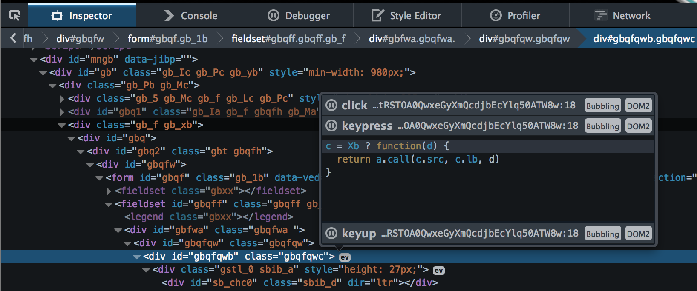

News from the Bleeding Edge
What Is Bleeding Edge Web?
A monthly-ish update of the latest and greatest in:
- Browser news
- W3C standards updates
- Interesting language & framework releases
- Emphasis on JavaScript and Node
Anything else that might be interesting to web app devs!
Browser Pop Quiz
Last version check — August 2014 (2 months ago):
Browser Pop Quiz
As of October 23, 2014:
Chrome Highlights

Firefox Highlights

Firefox Highlights
Opera Highlights
Version 24 (based on Chromium 37)

Opera Highlights
Version 25 (based on Chromium 38)
- Basically the same additions as Chrome 38 (responsive images, Screen Orientation API, Maps, Sets, etc.)
- New support for W3C Notifications API (in Chrome for a while)
Safari Highlights

IE Highlights

CSS Shapes - Level 1
http://www.w3.org/TR/css-shapes/
CSS Shapes allow web designers to wrap content around custom paths, like circles,
ellipses and polygons, thus breaking free from the constraints of the rectangle.
This is a live example — select text or resize the browser!
We're no strangers to love
You know the rules and so do I
A full commitment's what I'm thinking of
You wouldn't get this from any other guy
I just wanna tell you how I'm feeling
Gotta make you understand
Never gonna give you up
Never gonna let you down
Never gonna run around and desert you
Never gonna make you cry
Never gonna say goodbye
Never gonna tell a lie and hurt you
To view the live example, use a browser that supports CSS Shapes!

CSS Shapes - Level 1
Code for the previous example:
<img class="shape" src="images/bleeding-web.gif">
<p>We're no strangers to love...</p>
<p>I just wanna tell you how I'm feeling...</p>
<style>
.shape {
shape-outside: url(images/bleeding-web.gif);
float: left;
}
</style>
Quick Side Note...
Compare the previous slide in browsers that do and do NOT support CSS shapes.
The shapes CSS class gets added to the <html>
tag by Modernizr if supported
<script src="modernizr.js"></script>
<div class="shapes-example">
// Example HTML and code
</div>
<div class="shapes-preview">
<img src="shapes-preview.png">
</div>
<style>
.shapes-example,
.shapes .shapes-preview {
display: none;
}
.shapes .shapes-example {
display: block;
}
</style>
CSS Shapes - Level 1
Key concept: target shapes must be floated
Built-in shapes: circle, ellipse, polygon
Additional layout properties, e.g. shape-margin: 1em;
CSS Shapes - Level 1
Why is this interesting?
- Finally able to create print-quality layouts natively in HTML
- W3C Candidate Recommendation status
- Now supported by default in Chrome, Opera and Safari *
- Polyfill
available for other browsers
- WSYWIG editors available for Chrome and Brackets

* Surprisingly, Firefox typically leads on W3C spec support, but does
NOT currently support Shapes.
CSS Shapes - Level 1
Resources
CSS Shapes - Level 1
Why "Level 1"?
There is also a Level 2 spec (currently in Editor's Draft status)
Will extend Level 1:
- Adds support for defining "exclusion" areas via shape-inside
- Support for standard positioning, in addition to floats
Trivia Question
Windows is currently called Windows 8.
The next planned version is Windows 10.
Why no Windows 9?
Trivia Question (con't)
Official party line:
Windows 10 carries Windows forward into a new way of doing things. It is not an
incremental change, but a new Windows that will empower the next billion users.
— "Microsoft Spokesman"
Trivia Question (con't)
Official party line:
Windows 10 carries Windows forward into a new way of doing things. It is not an
incremental change, but a new Windows that will empower the next billion users.
— "Microsoft Spokesman"
Most likely real answer:
I bet the real reason it's called Windows 10 is because some enterprise app
written 20 years ago checks for "Windows 9x"
— Anil Dash (@anildash)
Languages, Frameworks & Tools
Node-os
http://node-os.com/
The first operating system powered by npm
- A full OS built on top of the Linux kernel
- Node is the primary runtime environment (i.e. no bash)
- Native OS-level support for npm
- Open source (on Github)
Mojolicious
http://mojolicio.us/
A next generation web framework for the Perl programming language
All the modern features you expect: REST, routes, plugins, even WebSockets
"Perl-ish" templates

Mojolicious (con't)
http://mojolicio.us/
Example of parsing a web page:
use Mojo::Base -strict;
use Mojo::ByteStream 'b';
use Mojo::UserAgent;
# Extract named character references from HTML spec
my $tx = Mojo::UserAgent->new->get('https://html.spec.whatwg.org');
b($_->at('td > code')->text . ' ' . $_->children('td')->[1]->text)->trim->say
for $tx->res->dom('#named-character-references-table tbody > tr')->each;
1;
uilang
http://uilang.com/
A minimal, ui-focused programming language for web designers
<script src="uilang.js"></script>
<div id="notification">
<p>You have 3 unread messages.</p>
<button class="hide">Hide</button>
</div>
<code>
clicking on ".hide" adds class "hidden" on "#notification"
</code>
Can I Use?
http://caniuse.com/
Massive matrix of browser-specific feature support
Includes known issues, links to specs and polyfills and more
Polyfill.io
https://cdn.polyfill.io/v1/
(Overview)
Hosted HTML5 / CSS3 / ES6 polyfill delivery service
A way of sending one single copy of each of the best polyfills, in the right order
(respecting dependencies), to just the browsers that lack a native implementation.
- Reads the requesting browser's UA string (customized per request)
- Eliminates duplication and manual polyfill management
- "Care-free" ability to leverage latest standards
/* Detected: chrome/37.0.2062
*
* - Array.isArray, License: CC0 (required by modernizr:es5array)
* - Array.prototype.every, License: CC0 (required by modernizr:es5array)
* - Array.prototype.filter, License: CC0 (required by modernizr:es5array)
* etc...
*/
Iconmonstr
http://iconmonstr.com/
2,600+ high-quality, royalty-free and customizable icons
Keyword search and curated collections

And now for something completely different...
Cool Firefox Features You May Have Missed
Event Listeners Popup
Available as of FF 33+
Useful for validating event handler setup, debugging memory leaks, etc.

Responsive Design Mode
Easily test standard and custom mobile layout sizes
Take mobile-sized fullscreen screenshots
3D DOM View
In recent FF, go to Developer Toolbox Options and check "3D View"
Click the tiny 3D box icon bottom-right and enjoy
←
→
/
#